Qualitative colour scale with evenly spaced hues.
Arguments
- ...
Other arguments passed on to
discrete_scaleto control name, limits, breaks, labels and so forth.- h
range of hues to use, in [0, 360]
- c
chroma (intensity of colour), maximum value varies depending on combination of hue and luminance.
- l
luminance (lightness), in [0, 100]
- h.start
hue to start at
- direction
direction to travel around the colour wheel, 1 = clockwise, -1 = counter-clockwise
- na.value
Colour to use for missing values
See also
Other colour scales:
scale_colour_brewer,
scale_colour_gradient,
scale_colour_grey
Examples
# \donttest{
dsamp <- diamonds[sample(nrow(diamonds), 1000), ]
(d <- ggplot(dsamp, aes(carat, price)) + geom_point(aes(colour = clarity)))
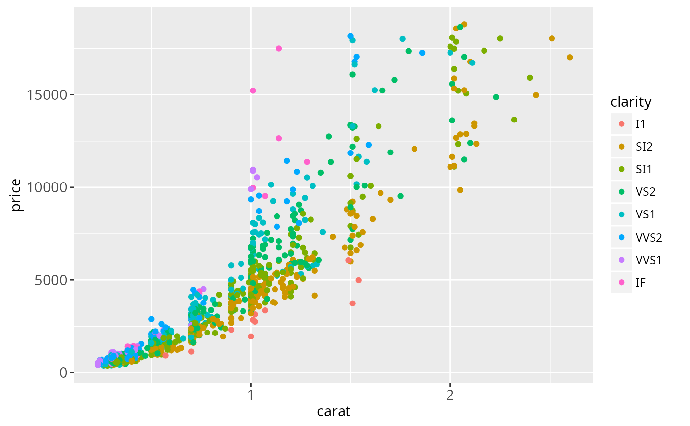
# Change scale label
d + scale_colour_hue()
d + scale_colour_hue("clarity")
d + scale_colour_hue(expression(clarity[beta]))
# Adjust luminosity and chroma
d + scale_colour_hue(l = 40, c = 30)
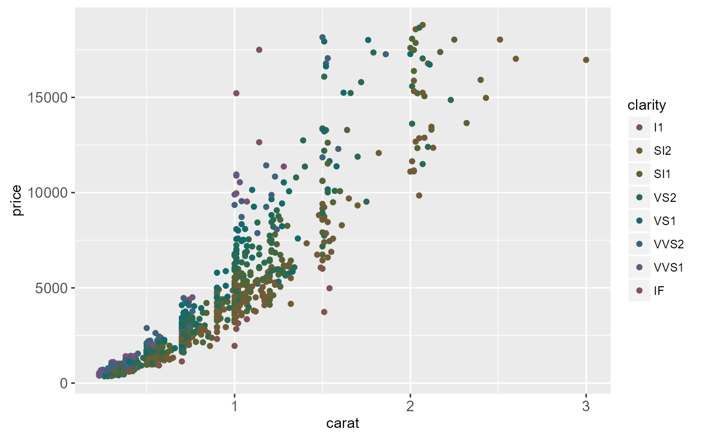
d + scale_colour_hue(l = 70, c = 30)
d + scale_colour_hue(l = 70, c = 150)
d + scale_colour_hue(l = 80, c = 150)
 # Change range of hues used
d + scale_colour_hue(h = c(0, 90))
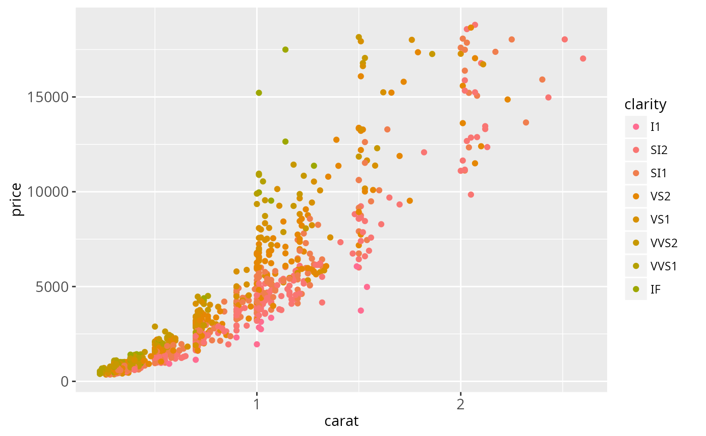
d + scale_colour_hue(h = c(90, 180))
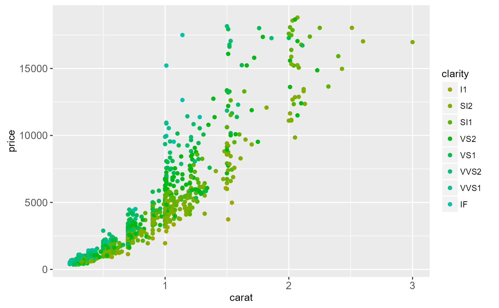
d + scale_colour_hue(h = c(180, 270))
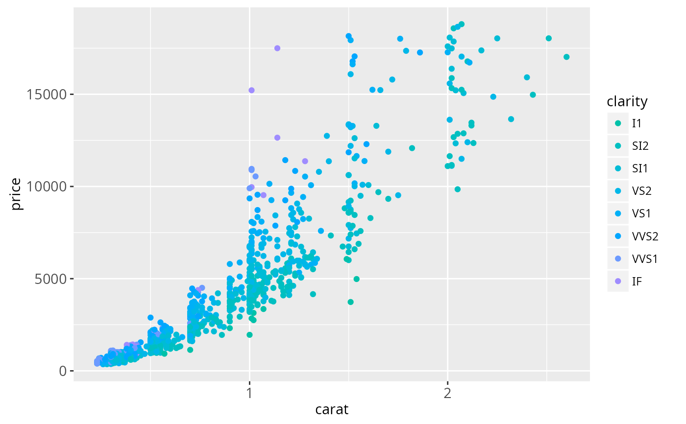
d + scale_colour_hue(h = c(270, 360))
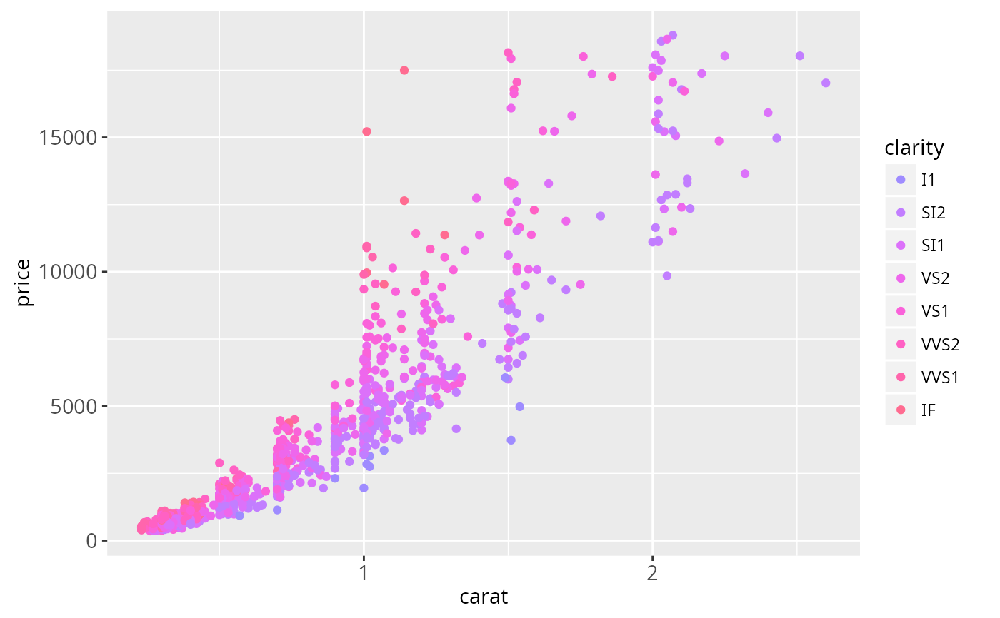
# Vary opacity
# (only works with pdf, quartz and cairo devices)
d <- ggplot(dsamp, aes(carat, price, colour = clarity))
d + geom_point(alpha = 0.9)
d + geom_point(alpha = 0.5)
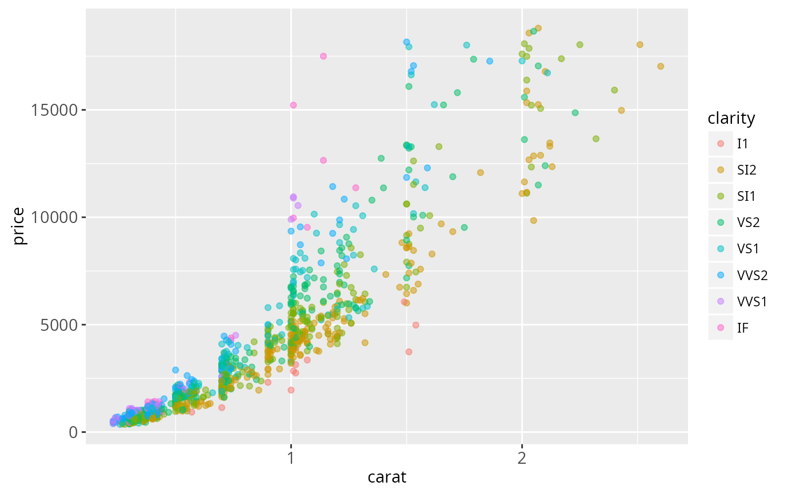
d + geom_point(alpha = 0.2)
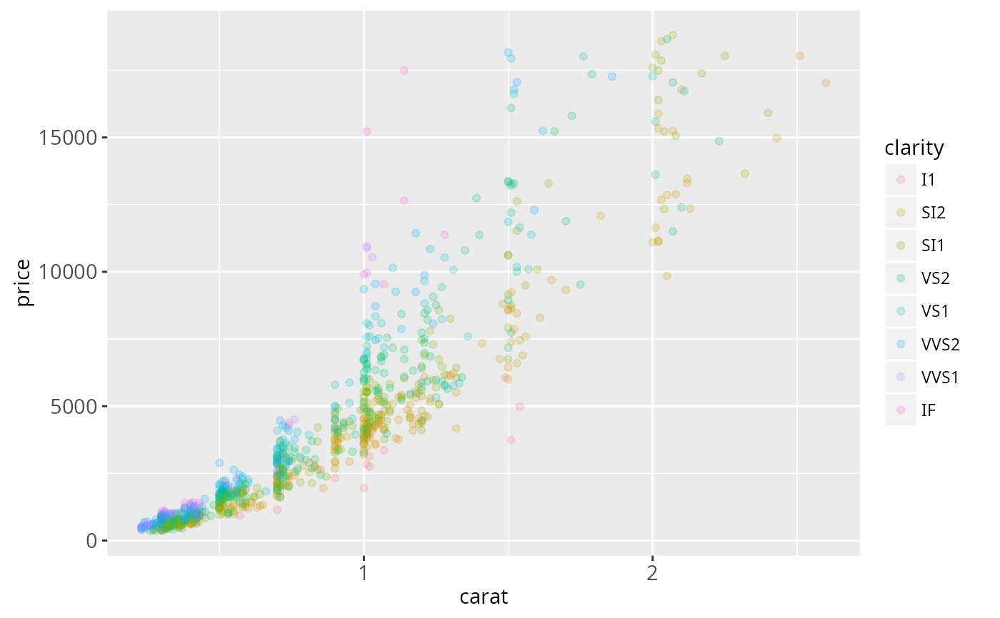
# Colour of missing values is controlled with na.value:
miss <- factor(sample(c(NA, 1:5), nrow(mtcars), replace = TRUE))
ggplot(mtcars, aes(mpg, wt)) + geom_point(aes(colour = miss))
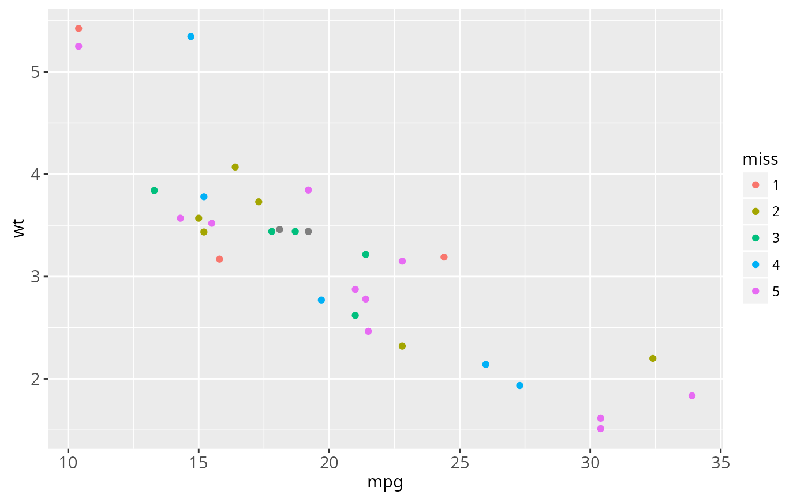
ggplot(mtcars, aes(mpg, wt)) +
geom_point(aes(colour = miss)) +
scale_colour_hue(na.value = "black")
# Change range of hues used
d + scale_colour_hue(h = c(0, 90))
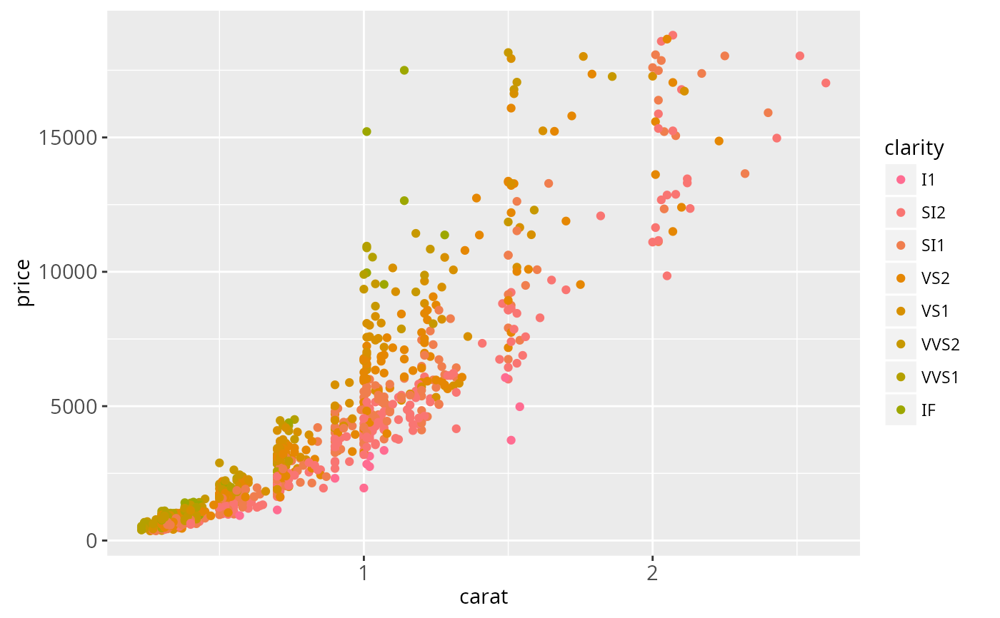
d + scale_colour_hue(h = c(90, 180))
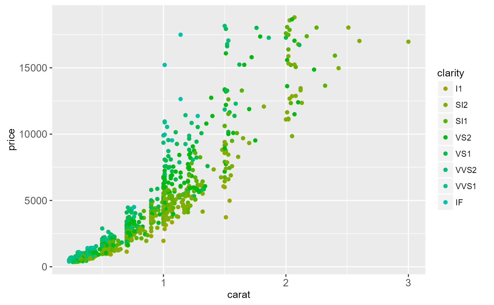
d + scale_colour_hue(h = c(180, 270))
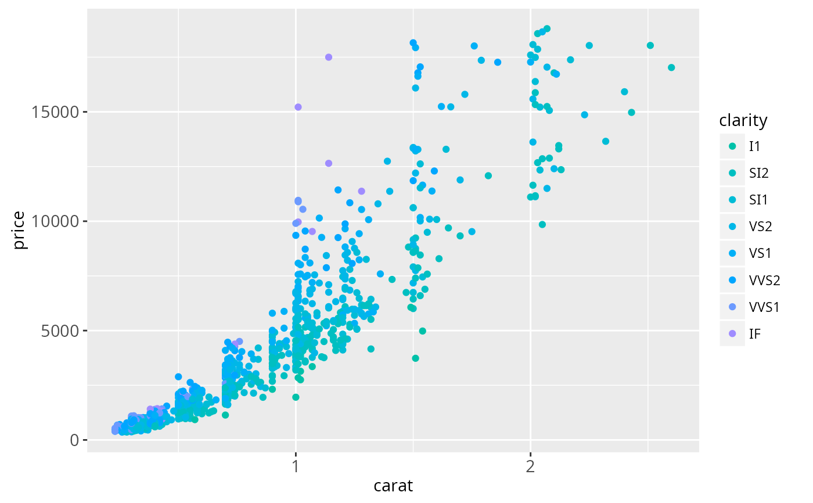
d + scale_colour_hue(h = c(270, 360))
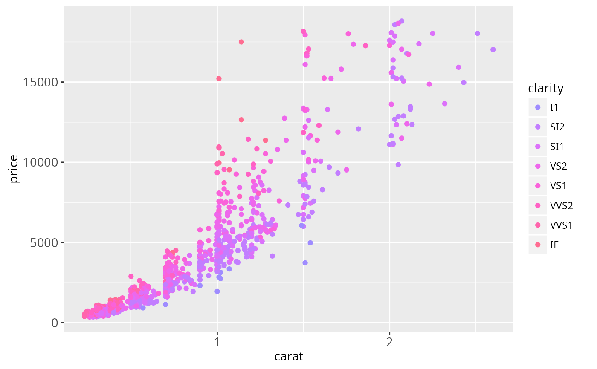
# Vary opacity
# (only works with pdf, quartz and cairo devices)
d <- ggplot(dsamp, aes(carat, price, colour = clarity))
d + geom_point(alpha = 0.9)
d + geom_point(alpha = 0.5)
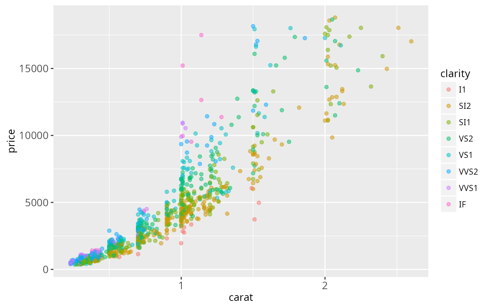
d + geom_point(alpha = 0.2)
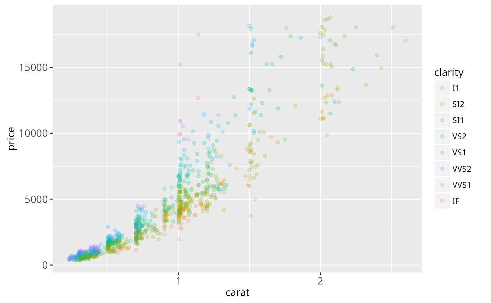
# Colour of missing values is controlled with na.value:
miss <- factor(sample(c(NA, 1:5), nrow(mtcars), replace = TRUE))
ggplot(mtcars, aes(mpg, wt)) + geom_point(aes(colour = miss))
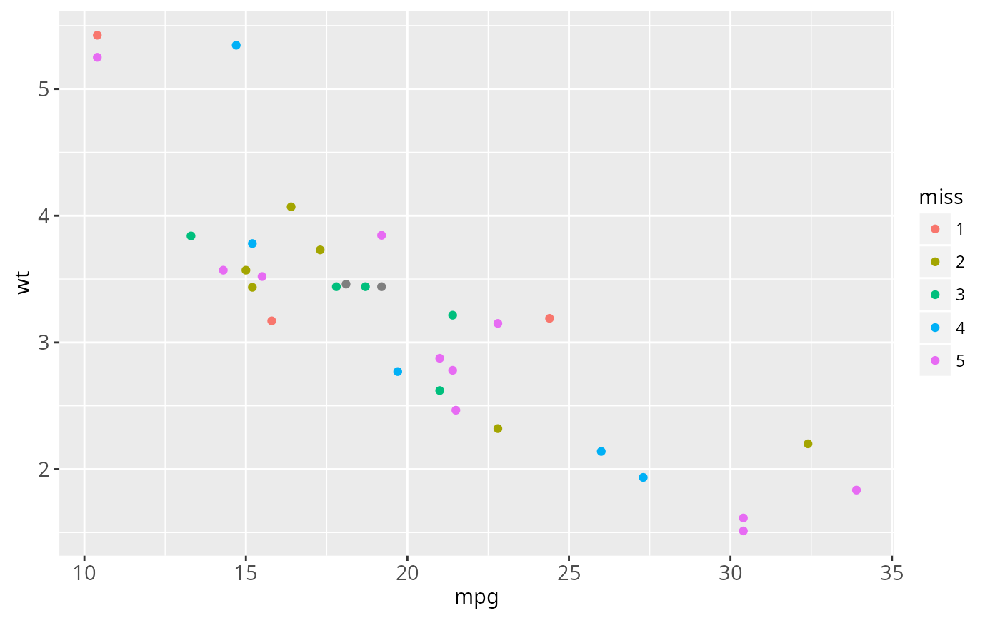
ggplot(mtcars, aes(mpg, wt)) +
geom_point(aes(colour = miss)) +
scale_colour_hue(na.value = "black")
 # }
# }